Genetic Algorithm in JavaScript
I will be very brief about every code block, although I'd like to explain more, but I won't have enough time at this moment.
I defined constant parameters of this algorithm on top of all the other functions so they can access these variables whenever they need them. These parameters can change performance of algorithm
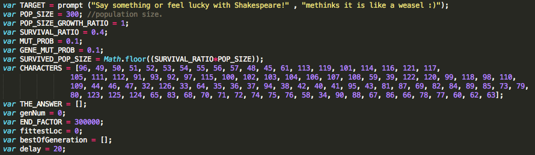this function will find UniCode of user input and returns targetCharCode as an array.
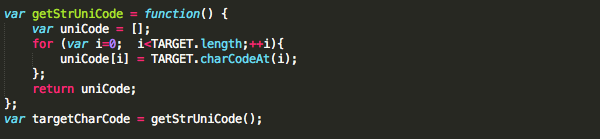this function will convert its variable from UniCode to printable characters and returns a joined string.
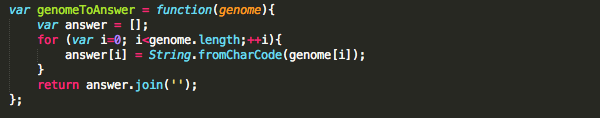this function generates a random combination of all printable characters with the length of user input. This possible answer is called Genome which is a member of our population
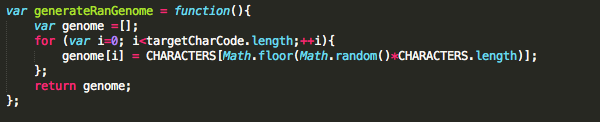this function gets a Genome and calculates its fitness to the target or the user input by giving +1 score per each letter in the correct location.
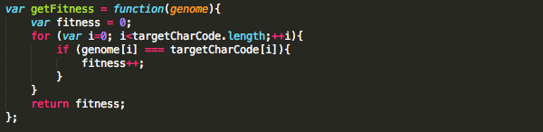in this function initial population with size of POP_SIZE will be generated. Each member of this population is an object with two properties of Fitness which stores the fitness score and the Genome which stores possible answer as an array.
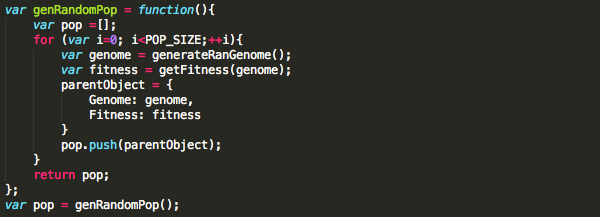this function turns every new offspring into an object with its properties and ads them into the population as new members. Very much like what school does in human society which prepares offsprings to get integrated into our society.
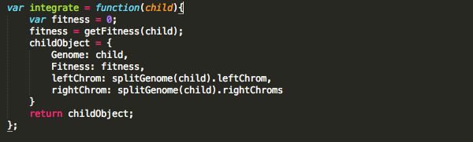this function splits every genome from the middle point to generate two chromosoms and adds these new arrays as two new properties (rChrome and lChrome) of the parentObject.
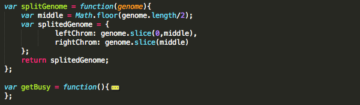mate function picks a random left chromosome and a random right chromosome and joins them together to create an offspring.
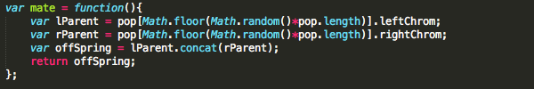if we consider every possible sentense a Genome, then every letters could be a Gene, in this function random Genes of randomly selected Genome will be mutated in which that letter will be replaced with another random letter. This doesn't happen to all the genes, but only to GENE_MUT_PROB % of the genes.
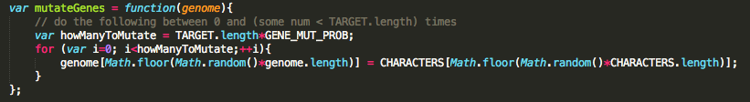this function will apply mutateGene function to MUT_PROB % of the population.
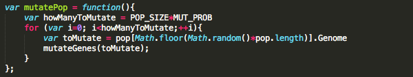this function kills those members of pop with lowest fitness score.
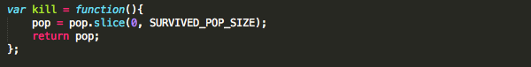this function will call most of above functions every generation until it finds the optimal solution.
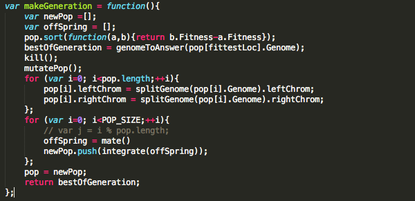this function finds the fittest of each generation.
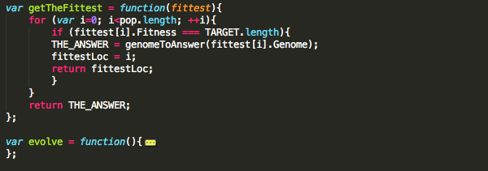and finally this is the last function which starts the whole process and outputs the result.
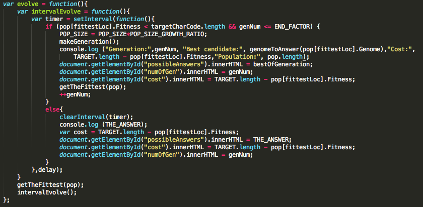